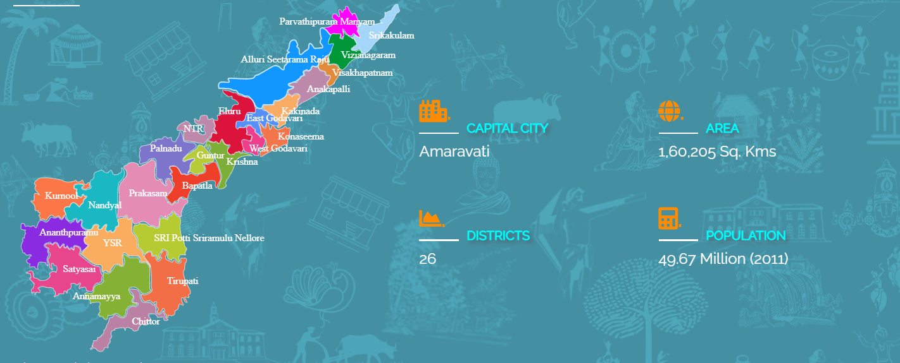

- Home
- Art & Crafts
- Culture
-

Andhra Predesh
There has been a lot of discussion on the definition of culture and how to define a place by the traditions that its people follow. Just like the
other states of the country, Andhra Pradesh has a whole new kind of diversity to offer to its residents and the ones flocking by to witness it.
Some distinguishing features of the place include its delicacies, melodious music, rock-n-roll dance moves, free-spirited people and their
creative bent of mind. The art & craft here are first class and have a superb quality that has helped the state to thrive and get identified
uniquely. The finger-licking Andhra delicacies have a 'Nawabi' touch given to them. Can't control your curiosity already?Andhra Pradesh has gained tremendous prestige and importance in the past years for its brilliant contribution in the
field of music, dance such as Dhimsa, Kolattam, Lambadi, Bhama Kalapam Kuchipudi Dance, Butta Bommalu,Veeranatyam and drama like Burrakatha.
Three kinds of people live at Andhra Pradesh,
and they all have contributed to the fields of Arts and Crafts in Andhra Pradesh to make it one of the principle states in India. They
include the original inhabitants, hill dwellers and tribal people. They have designed their own dances and in
course of time these dances have won the hearts of millions across the world. Dance as an art form in Andhra Pradesh
can also be classified as Social Dance, Religious Dance and Dance as a pastime. Apart from its dance form, artifacts such as leather
and wooden items or work of Andhra Pradesh have gained recognition across the globe. -
Art & Crafts

-> Arts of Andhra Pradesh:
Kuchipudi owes its origin to the state of Andhra Pradesh and is a delightful performing art. The Peacock Dance of the Khonds deserves special mention. The Peacock Dance of the Khonds who are the mostly the backward people of the hill tribe perform this dance to celebrate a marriage festival which falls in the month of April.
The Pirodi Dance accompanied with flute and bells is charming and vibrant. There is no musical accompaniment to the dance. White Dhotis swings around the waist of the dancers and create a soothing effect to the eye; tinkling bells in their anklets keeps the rhythm. These anklets are also known as Muyyangam. Tubans worn in heads makes the Pirodi dancers more vibrant and energetic.
While the Peacock dancers moves in circles the audience's the mind immediately recognizes the impression of peacocks spreading their canopies of multihued feathers. The Mango Dance also deserves special mention. It is the dance of the tribal people residing in the Bison Hills.
-> Crafts of Andhra Pradesh:
Andhra Pradesh includes the Hyderabadi Pearl that comes with a variety of designs and Birdi Wares. These are exquisite flower vases of different shapes and sizes. The Metal Casting in Dokora style that is mostly used in designing bells is popular throughout the country as well as abroad. The most important is however the hand knitted carpets. They are popular and expensive for their rich designs. The Brass Icon of Nataraja Tirupati is perhaps the emblem of Andhra Pradesh. Apart from all these crafts items in Andhra Pradesh numerous items such as Bonalu, Bidriware, Bead Embroidery,Tappeta Gullu, Folk Painting, stone studded elephant, Kalamkari Painting and Siler Filgree and Wooden Carvings are also found.-> Kalamkari Paintings
This is one of the many types of painting that you can find in this country. What make this painting rare and unique is the materials they use in making these paintings. The brush used in this painting is a quill. The colours are made from vegetables. In machilipatnam, you can find printed wood blocks that are very common souvenirs. This painting started in 10th century when there was a flourishing trade between India and Persia. This painting was taught by Persian traders. This painting is done through 12 stages. It takes a lot of time and patience to complete. Cloths, hangings, covers and many other materials can be decorated with this painting. This piece of art is something that you ought to take back with you when you leave Andhra Pradesh. -
Culture
Religion, Feasts and Festival The Dwaita, the Visishtadwaita, the Advaita, and Saivite faiths coexist in Andhra Pradesh among Hindus, while Muslims and Christians also live side by side with tolerance. The Sakti, in her finer and cruder manifestations is also worshipped. In the better and richer type of villages, the temples of Vishnu, Siva and Sakti prevail. Vighneswara, Srirama and Hanuman are also provided in these shrines. Religious or sectarian fanaticism in general does not exist in the State of Andhra Pradesh.
Some of the famous temples in Andhra Pradesh are at Simahachalam, Sun temple in Arasavalli in Srikakulam District), Draksharama, Bhadrachalam in Khammam District, Annavaram and Antarvedi in the East Godavari District, Mangalagiri in Guntur District, Achanta, Palakol, Dwaraka Tirumala in West Godavari, Tirupati and Kalahasti in Chittoor, Kanaka Durga at Vijayawada in Krishna and Ahobilam in Kurnool District. The other famous temples are in Srikakulam, Mukhalingam. Kotappakonda, Srisailam and Mahanandi. All of them are structures of great antiquity and possess rare architectural values. Christian churches in places like Medak and mosques in Hyderabad are noteworthy. In addition to these, local deities called Gramadevatas are held in reverence. Jataras are celebrated. They do not belong to any particular denomination.
The Hindu priest would officiate at their ceremonies; nevertheless the villager regards them with awe and never fails to do obeisance before them. These are located generally on the village outskirts, the idol consisting of a stone smeared liberally with oil, saffron, kumkum and turmeric. The Gramadevatas, one comes across in rural Andhra are innumerable and are given local names such as Gangamma, Gogulamma, Nukalamma, Vellamma, Chinnamma, Muthyalammma, Bangaramma, Ankalamma, Pyditalli, Perantalamma and Poturaju. If disregarded for too long, people believe they cause diseases and disasters in the village. Animal or fowl sacrifice is practiced to appease them. The religion of the hill tribes is based largely on superstition and animism. Witchcraft and animal sacrifice are also widely believed, though they are becoming things of the past by the spread of modern education. The most terrible visitation in the eyes of the Koya tribe in Godavari Valley are eclipses of the sun and the moon for they believe that the devil in the shape of a serpent or a tiger is thereby trying to swallow the earth. They ward it off by beating drums all the time the eclipse lasts.-> Feasts and Festivals
Andhras observe many feasts and festivals. Most of them have some religious significance; but they are notable mainly for the occasion for gaiety and merry making they provide. On such days every household is decorated with floral and green leaf torana hung across the windows and doors. The courtyard is decorated tastefully with designs of muggu powder (rangoli) and the doorsteps are painted with daubs of turmeric and kumkum pastes. Dhoop sticks and dhup, sambrani are burnt in all the homes and the air is filled with aromatic smell. People wear new clothes; the lady of the house cooks special dishes and generally some community function is held near the village temple or at a common place. There are nine major festivals observed by Andhras; seven of them religious and two agricultural.
1. Ugadi:
Ugadi is Telugu New Year Festival usually comes in March/April. This is regarded auspicious for the peace, prosperity and happiness of the family in the ensuing year. The family members wear new clothes on this occasion and the entire day is spent in feasting out the forecast for the following year from Hindu almanac at a ceremony called ‘Panchanga Shravanam’.
2.Srirama Navami:
It is the celebration of the birth of Sri Rama usually celebrated in April. It is observed with devotion and prayers. The Ramayana is read out before huge gatherings and at the end of which panakam, a drink made out of jaggery and vadapappu a preparation with green gram dhal are distributed.
3. Vinayaka Chaturthi:
Vinayaka is god of success. This festival too is observed in August/September with great devotion to ensure success for all the family’s undertakings in the ensuing year.
4. Dasara:
This festival falls about September/October and is celebrated for ten days as ‘Dasara Navaratri’. On the ninth day craftsmen and artisans worship their tools as ‘Ayudhapooja’. The tenth day Vijayadashami is celebrated with gaiety.
5. Deepavali:
The Festival of lights which falls weeks after Dasara is celebrated as victory of good over evil for the slaying of the mythological tyrant Narakasura by Lord Krishna and his consort Satyabhama. End of Narakasura resulted in freedom to 16,000 maidens whom the tyrant had kept in captivity. Wearing new clothes, Children celebrate the festivals by lighting fire works.
6.Sankaranti:
The festival falls on 13/14th of January every year, when the farmer expresses his gratitude to nature after a good harvest. It is an important festival for Andhras.
7.Mahasivarathi:
The festival February/March, is celebrated in honour of Lord Siva who constitutes the trinity of Brahma, Vishnu and Siva.
Panduga, Eruvaaka are celebrated by Andhra farmers. The housewives celebrate vratams and nomus. Shravana mangala varamu, Kartika somavaramu are typical examples. The hill tribes celebrate the Chaitra festival when the harvest is gathered and there is a whole month before them to dance and make merry. -
Feasts and Festivals